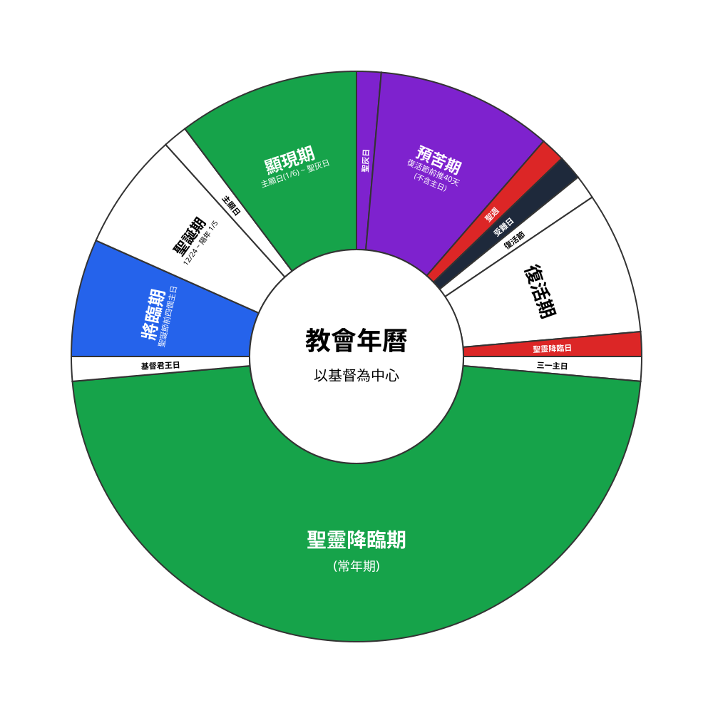

「教會年」（Liturgical Year 或 Church Year），是歷代教會為了幫助信徒更深刻地認識基督，而精心編排的屬靈節奏。透過每年不斷循環的節期，我們得以在歷史與信仰的交織中，在日常生活中經歷三一上帝的奇妙作為。

教會年的設計以「基督」為中心。整體架構以三年為一個完整循環（分為甲年、乙年、丙年）。每年又劃分為兩大階段與六個主要節期：
藍色 時段：聖誕節往前推算的四個主日。
屬靈意義：這個節期我們預備慶祝基督的降生、等候基督的再臨。
白色 時段：從平安夜（12/24）至隔年 1/5。
屬靈意義：我們慶賀基督降生！
白色 (特殊節日) 綠色 (一般主日) 時段：自主顯日（1/6）起至聖灰日前一天。
屬靈意義：這個節期我們慶賀基督顯明身份、開展其在世的工作。
紫色 紅色 (聖週) 黑色 (受難日) 時段：復活節往前推算四十天（不含主日）。
屬靈意義：這段時期，我們帶著悔罪的心，與基督同走十架苦路。
白色 時段：復活節起連續七週。
屬靈意義：這個節期我們歡慶復活的基督已為我們徹底戰勝了罪惡與死亡的權勢。
紅色 (聖靈降臨主日) 白色 (三一主日/基督君王主日) 綠色 (常年期) 時段：自聖靈降臨主日起至下一個教會年將臨期以前。
屬靈意義：這是教會年的下半年。我們慶賀聖靈的同在，並在聖靈的帶領下，持續在聖道與聖禮中靈命成長。
遵循教會年的好處？
三代經課是大公教會廣泛使用的三年期（甲、乙、丙年）讀經表，其核心精神是讓信徒的信仰生活與教會年緊密結合。教會年以基督的生平為中心，從將臨期、聖誕期、顯現期，到預苦期、復活期，最後進入聖靈降臨期（常年期）。三代經課依循這個節奏，確保教會在三年內能有系統地走過聖經的核心書卷(並非整個聖經)，讓每週的崇拜都對齊基督救贖的敘事軌跡。
在漫長的「常年期」中，三代經課的舊約讀經提供了兩種不同的編排邏輯，供教會依牧養需求選擇：
【呼應式】
舊約經文的選擇是為了直接「呼應」當日的福音書經文。這種安排強調新舊約之間的主題連貫性，幫助信徒清晰看見舊約的預言、敘事或律法，如何在耶穌基督身上得到成全與展現。
【半連續式】
舊約經文不刻意配合當日的福音書，而是採取「逐章逐段」的閱讀方式，在連續數個主日中順序讀完特定的舊約書卷。這能幫助信徒跳脫片段式的閱讀，掌握舊約歷史的完整脈絡與宏大敘事。